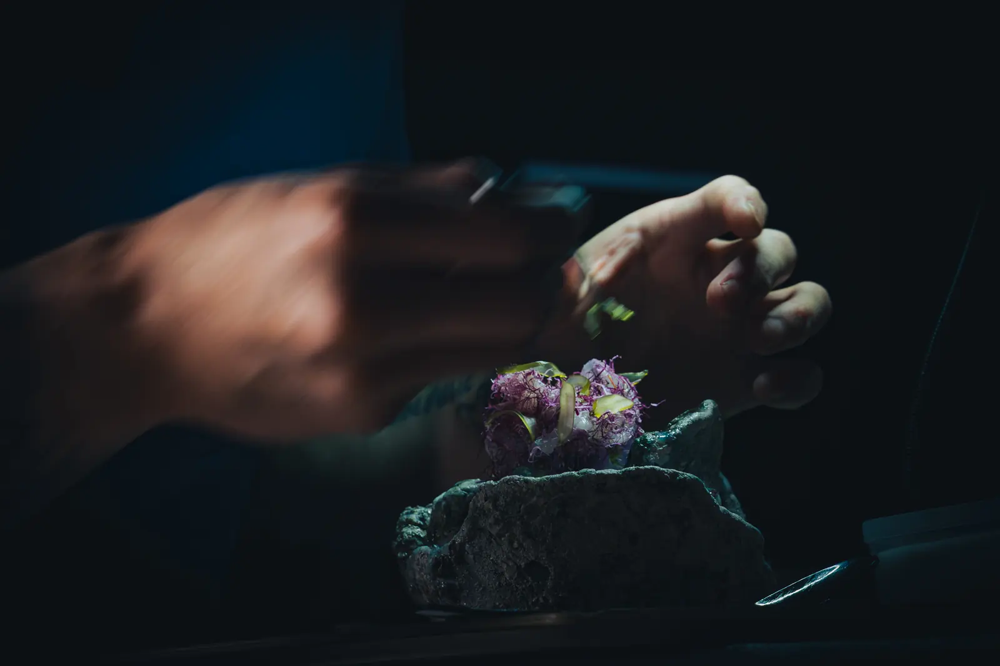

餐後另有安排的夜晚
精簡套餐
全5章・餐桌席・1–8位
回應「餐後另有安排」「想以品酒為主」的心聲，刻意止於八分飽的全5章。作為 ETHICA 旅程的序章。
14,800含稅
查看空位

銀座 ETHICA｜米其林二星 MAZ 出身主廚的創新料理（超越傳統與國界，以自由的構想與技藝誕生的全新美食體驗）・連續三年入選《米其林指南東京》
Philosophy

菜單上沒有菜名，只寫著「地球誕生」「恐龍時代與大滅絕」等時代名稱。端上的是什麼，要到料理來到眼前才揭曉。我們將地球初生時的風景，以及各文明孕育的智慧、技法與香料，以現代技術重新構築，編成一則完整的故事。願在此度過的數小時，成為超越用餐的記憶。
將時空的片段凝縮於每一道菜，化為觸動五感的旅程。
Cenote
古代中南美文明的聖泉「天然井（Cenote）」，驀然現身銀座。
大地愈深，地層愈古老。天然井的水底，至今仍沉睡著冰河時期形成的鐘乳石。
藍色的餐桌，正是那片水面。每一道菜，都潛入不同時代的深度。第1道是38億年前的海洋，第3道抵達最深的46億年前。隨後上浮，最後再深潛一次，是全8章的旅程。
水面＝現在・銀座咖啡・紅茶
第1道，38億年前
從據說誕生最初生命的深海熱泉出發，以秋季洄游鰹魚揭開旅程。
第5道，2億年前
恐龍的時代，以及它的終結。肥美的土魠魚料理。
第7道，500年前
500年前，食材跨越海洋往來流通的時代，以溫州蜜柑詮釋。
以上節選 ETHICA 典藏・2026年秋季中的3個篇章。食材隨季節與進貨更換。
Innovative Plates
ETHICA 的料理，將地球的歷史、文明與自然風景重新構築為料理。
不只是美，更將味道的完成度放在首位。
為了抵達其精髓，我們珍視：
這三點是我們的堅持。


Executive Chef
行政主廚松苗，曾歷練於米其林二星創新料理「MAZ」、一星中菜「虎峰」，並在日本料理、法式、義式、西班牙料理等多元領域累積經驗。他以獨到的感性，融合在各種料理中淬鍊的技藝與味覺，始終追求味道的極致完成度。憑藉多元飲食經歷孕育的自由構想，將地球的歷史與古代文明的記憶，昇華為獨具創意的一道料理。
MASAO ANDRÉS MATSUNAE GUZMÁN
Culinary Philosophy

ETHICA 追求的，不是仰賴高級食材或油脂的濃郁，而是認真面對每一種食材，將其潛在的可能性發揮到極致。
如同法式料理，以瓦片脆餅與脆片增添細膩口感，以泡沫（espuma）營造輕盈的入口即化。自由組合多種技法，在發揮食材個性的同時，追求味道的完成度。
一般的料理，多由客人以刀切開食材，自行搭配配菜與醬汁享用。而在 ETHICA，這一口的完成，皆由松苗主廚親自設計。
如同日本料理，蔬菜等配菜的大小與厚度也精確到毫米。主角食材、配菜、帶有祕魯香料的醬汁與口感，全都經過縝密構築，在一匙之中達到和諧。
所有料理都只需一支湯匙享用，因為每一口都被設計為能完整呈現整道料理的味道。
The Cave
岩壁環繞、燈光幽微，宛如洞穴的空間。自銀座街頭踏入一步，旅程隨即展開。全店24席，依用餐場合備有3種座位。


Courses
連續三年入選《米其林指南東京》
若難以抉擇，推薦 ETHICA 的代表作「ETHICA 典藏」。週六、週日午餐亦提供相同套餐。
餐後另有安排的夜晚
全5章・餐桌席・1–8位
回應「餐後另有安排」「想以品酒為主」的心聲，刻意止於八分飽的全5章。作為 ETHICA 旅程的序章。
14,800含稅
查看空位初次造訪
全8章・餐桌席・1–8位
以8道料理穿梭地球46億年故事的 ETHICA 代表套餐。當季主角以安地斯黃辣椒（Ají Amarillo）與藜麥入菜，最後以安地斯果實魯庫瑪甜點作結。
19,800含稅
查看這趟旅程的空位生日・紀念日・2位起
全9章・餐桌席・2位起・附祝福盤
尊享典藏全9章，附上手繪祝福盤。願46億年故事的終章，成為與重要之人的紀念。
25,200含稅
查看紀念日套餐空位
約會・紀念日・1–2位
全9章・廚房內包廂吧檯・1–2位・每日限1組
廚房內每日僅限1組的吧檯。以尊享典藏為基礎，融入更稀有的部位與當日限定食材，由主廚在您眼前完成的全9章。
27,800含稅
查看吧檯空位
素食者・1–8位
全8章・餐桌席・1–8位
以素食食材走過 ETHICA 故事的全8章。亦可因應純素與穆斯林友善的需求。
19,800含稅
查看空位特別的夜晚
全9章・餐桌席・1–8位
以珍稀食材升級典藏的故事，延伸為全9章。獻給想走得更久、更深的夜晚。
24,800含稅
查看空位所有價格皆為每位、含稅。
※「人氣第一」依據 Tabelog 的「人氣No.1」標示（近30天訂位組數最多的套餐・截至2026年10月）。
Q&A
推薦完整走過 ETHICA 故事的「ETHICA 典藏」（全8章）。若餐後另有安排，也可選擇全5章的精簡套餐。
精簡套餐（全5章）約1.5小時，ETHICA 典藏（全8章）約2.5小時，全9章的套餐約2.5–3小時。
可為您準備手繪祝福盤。請選擇生日・紀念日套餐，或於訂位時與我們洽詢。另可準備銀座 Calon「永不凋謝的花束」，如有需要請告知。
廚房內設有2–4位、每日限1組的包廂。請預訂「美饌體驗（全9章）」。
我們備有搭配料理的無酒精餐搭（9,800）。如有需要，請於訂位時告知。
如有過敏，請於訂位時一併告知同行者的情況。我們亦提供素食 ETHICA 典藏。純素與穆斯林友善的需求，只要於訂位時告知，皆可配合。
可以。精簡套餐、ETHICA 典藏、尊享典藏、素食 ETHICA 典藏及主廚吧檯，皆可1位起訂。生日・紀念日套餐與包廂美饌體驗則需2位起。
請著 Smart Casual（休閒正式）服裝蒞臨。敬請避免穿著背心、短褲及海灘拖鞋，除此之外歡迎輕鬆光臨。
可使用信用卡（VISA・Master・JCB・AMEX・Diners），以及交通系 IC 卡、iD、QUICPay。
若有空位，臨時也可訂位。請先查看空位。
可洽談最多20位的包場（立食形式請另行洽詢）。請來電洽詢（03-6228-7313・受理時間 12:00–17:00）。
Access